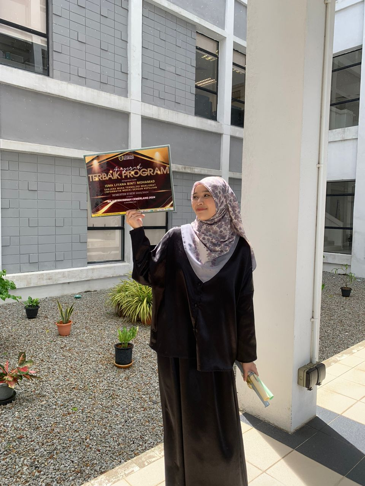
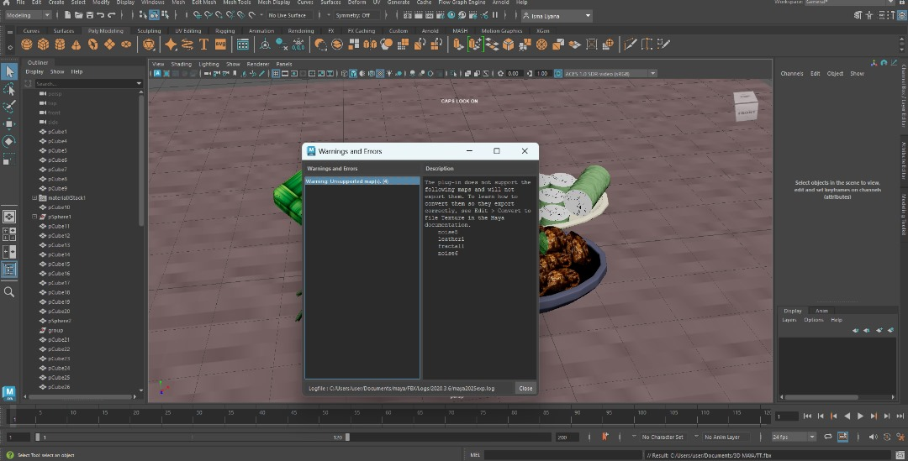
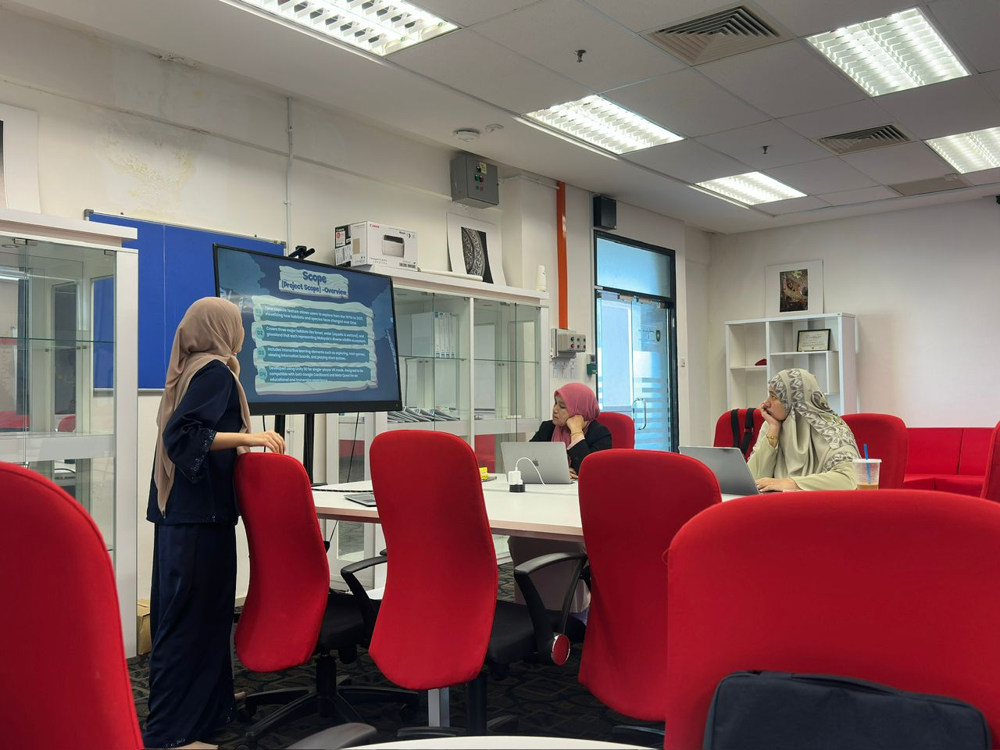
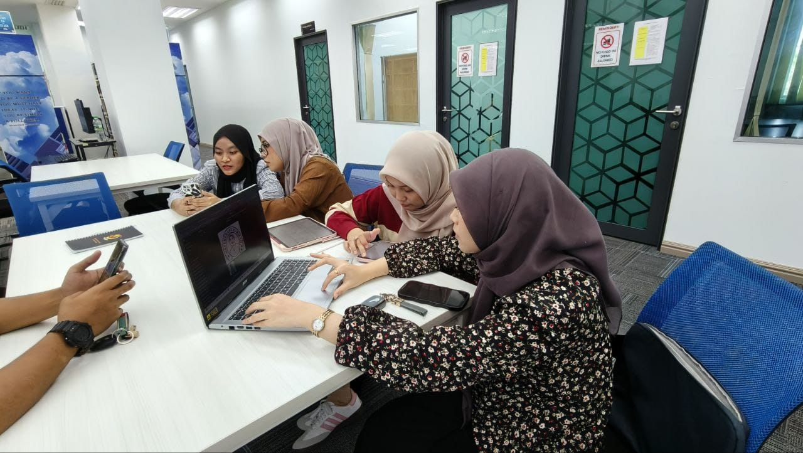
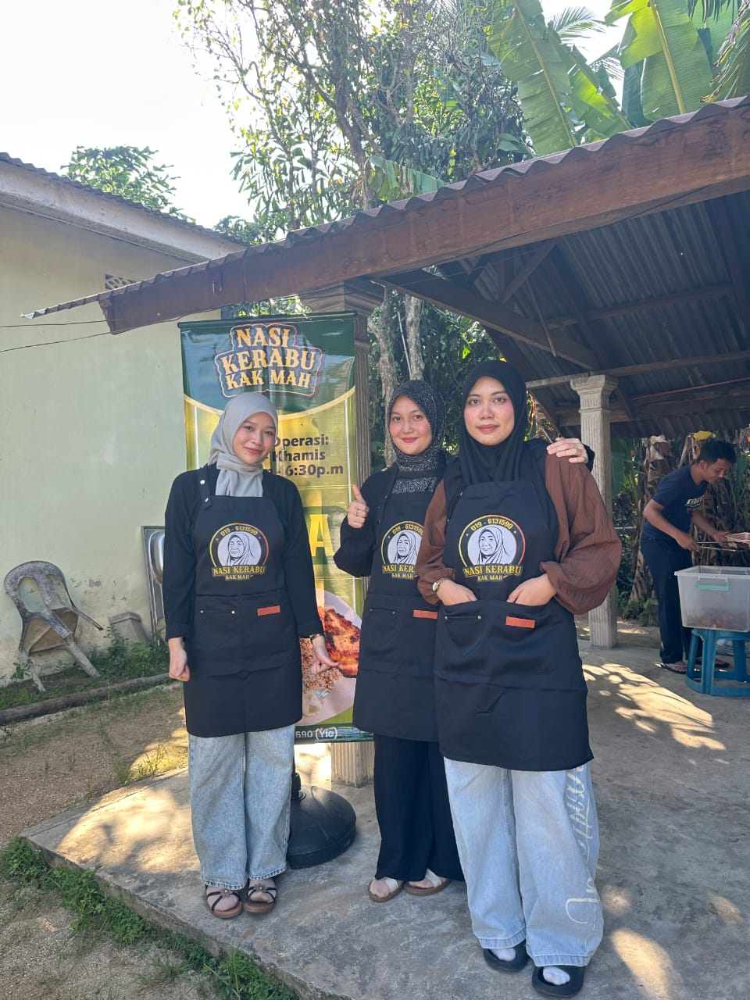
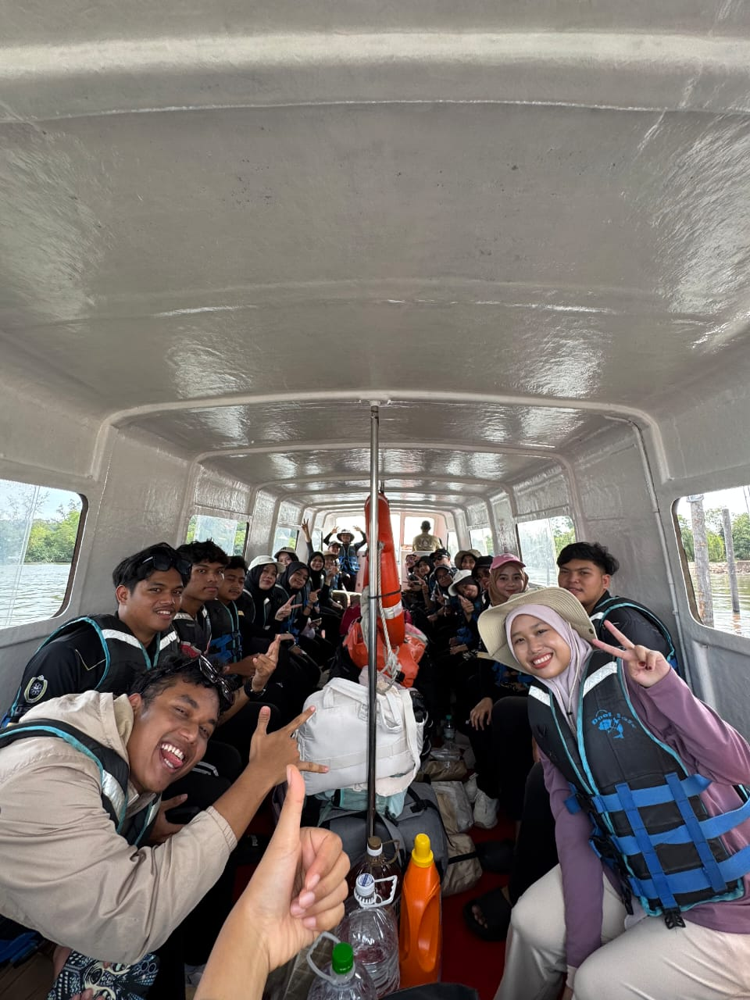
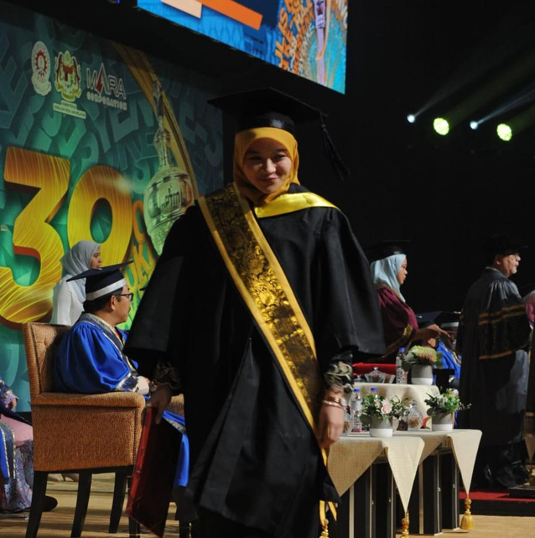

A Little Space About My Student Life
A personal student journey filled with assignments, coding nights, creative projects, little achievements and memories throughout university life.
Read More ↓The Reality of IM Student

Assignment Week
Too many deadlines at once sometimes make student life exhausting.

Coding Nights
Dedicated hours of coding and problem-solving helped turn ideas into functional and meaningful projects.

Presentation Stress
Presenting in front of class slowly helped build confidence.

Group Projects
Working with different people taught me communication and patience.
All these experiences slowly taught me how to manage stress, survive deadlines and grow as a student throughout my university journey.
Read More ↓How I Survived My Semester

Managing My Time
Taking part in this activity taught me responsibility, teamwork, and the importance of commitment.

Taking Breaks
Resting and taking short breaks gave me energy to continue busy weeks.

Small Achievements
Celebrating little progress made me appreciate my student journey more.
That’s how I slowly survived my semesters by learning, growing and understanding that every stressful moment was also part of becoming a better version of myself.